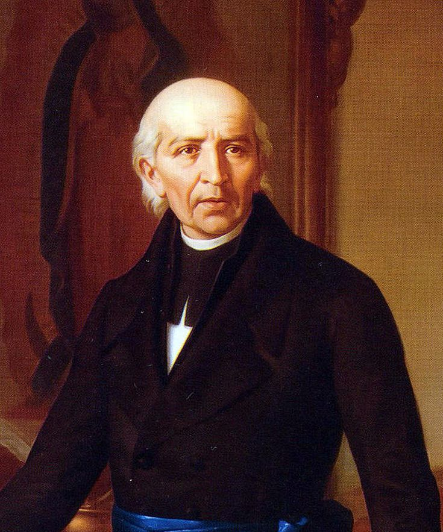
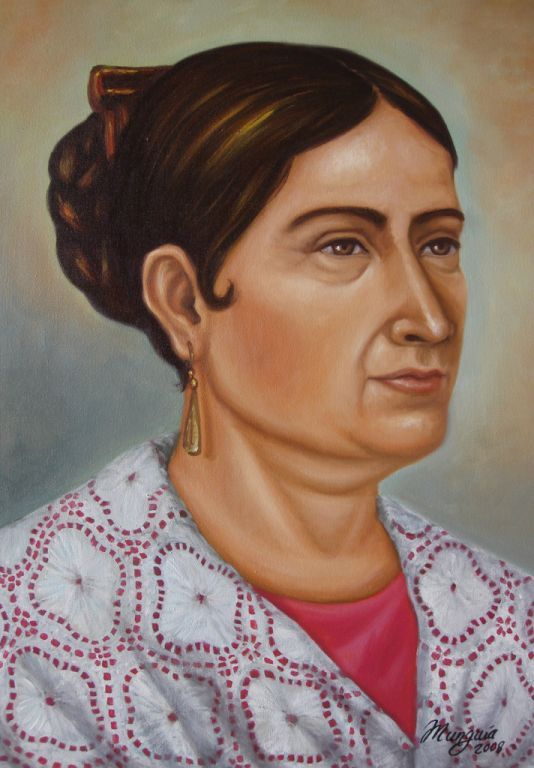
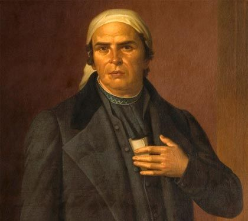
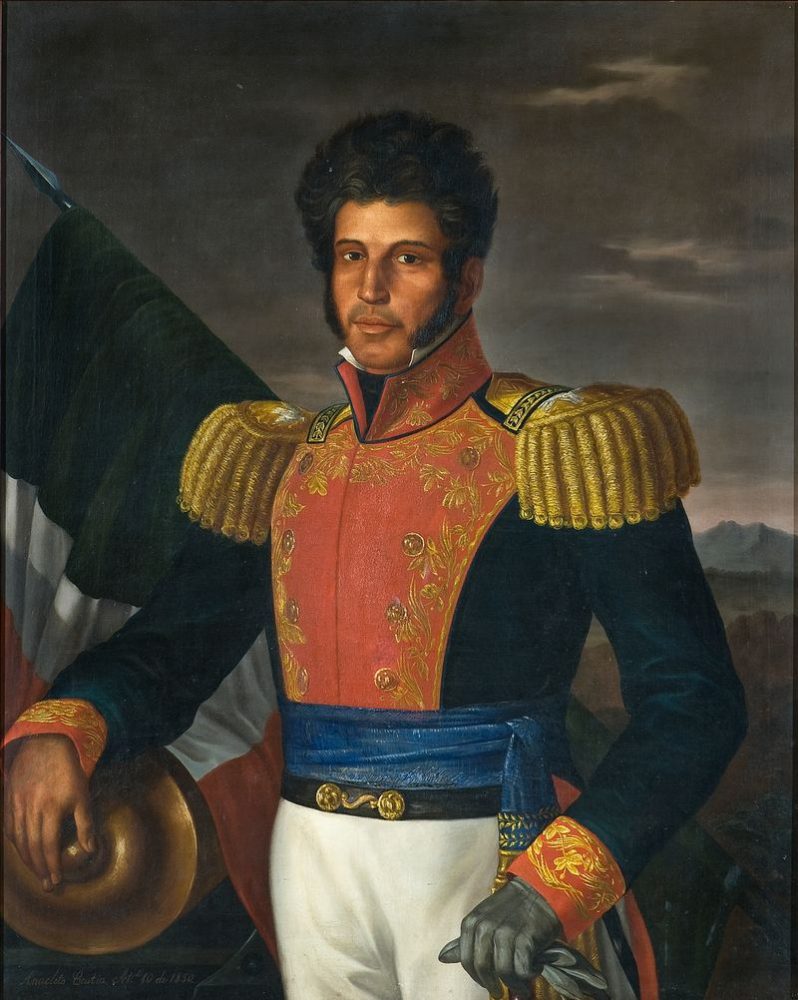
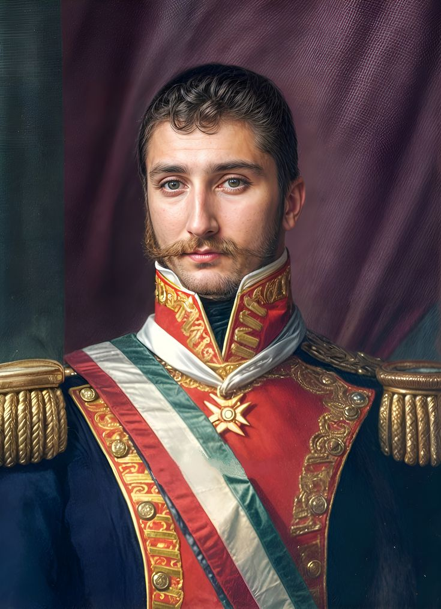
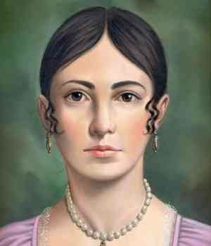

Batalla contra la invasión estadounidense donde combatieron los Niños Héroes.
Conmemoración del inicio de la lucha independentista; el Presidente y los gobernadores replican el grito desde los balcones oficiales.
Levantamiento armado convocado por Miguel Hidalgo y Costilla. Se realiza el Desfile Militar Anual.
Entrada del Ejército Trigarante a la Ciudad de México, encabezado por Agustín de Iturbide y Vicente Guerrero.
Declaración oficial de la soberanía del Imperio Mexicano.
Nacimiento del "Siervo de la Nación", estratega clave de la segunda etapa de la guerra.

Miguel HidalgoConsiderado el "Padre de la Patria".
Cura novohispano que convocó al pueblo de Dolores a levantarse en armas la madrugada del 16 de septiembre de 1810.

Josefa Ortiz"La Corregidora"
Pieza clave de la Conspiración de Querétaro; al ser descubierta la trama, logró enviar el aviso oportunamente a los insurgentes para adelantar el levantamiento.

José M. MorelosLíder militar y político
Asumió el mando tras la muerte de Hidalgo. Autor de Sentimientos de la Nación, documento base de la constitución soberana.

Vicente GuerreroGeneral insurgente
Mantuvo viva la resistencia en el sur durante la etapa más difícil del conflicto. Pactó el fin de la guerra con Agustín de Iturbide mediante el Abrazo de Acatempan.

Agustín de IturbideMilitar realista
Pactó con los insurgentes para proclamar el Plan de Iguala y consumar la independencia al mando del Ejército Trigarante.

Leona VicarioPeriodista y financiera de la causa insurgente
Formó parte de la red clandestina "Los Guadalupes", informando sobre los movimientos de las tropas realistas.
Fue la madrugada del 16 de septiembre (5:00 AM), no la noche del 15.
Corrió el festejo al 15 de septiembre para hacerlo coincidir con su cumpleaños.
No se arrojó envuelto en la bandera; fue una historia romantizada para inspirar patriotismo.
La guerra duró 11 años y terminó el 27 de septiembre de 1821, no el 16.